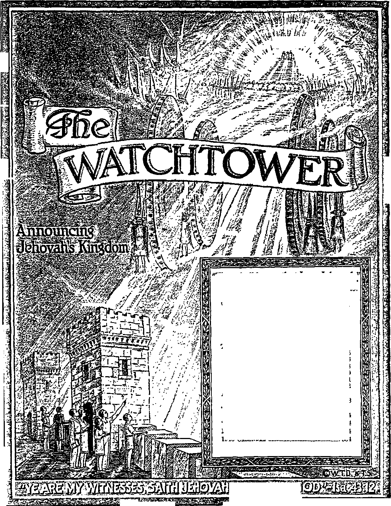

-I
'"s
3
354
B
waxaz
* !IV-
RI I
-Ezekiel 35:15.
Vol. LXVIII Semimonthly
No. 23
DECEMBER 1, 1947
CONTENTS
The Theocratic Organization and Its Governing Body...................
Benefits _________________________________________
Mutual Support .............................
The Issuing of Instructions ...........
Not Nationalistic, but Theocratic Where to Look .................................
Assemblies in the Netherlands, England, Newfoundland........
“Praise-giving Nations”
Testimony Period _____________
” W ATiiXiiu ** La’ Studies ..................
355
356
358
359
361
362
363
354
354
1948 Yearbook of Jehovah’s witnesses 354
1948 Calendar
Published Semimonthly By
WATCH TOWER BIBLE & TRACT SOCIETY 117 Adams Street - - Brooklyn 1, N.Y., U.SA.
Officebs
N. H. Knorb, President Grant Suiter, Secretary
“And all thy children shall be taught of Jehovah; and great shall be the peace of thy children.” • Isaiah 54:13.
THE BIBLE CLEARLY TEACHES
THAT JEHOVAH is the only true God, from everlasting to everlasting, and is the Maker of heaven and earth and Giver of life to his creatures; that the Word or Logos was the beginning of his creation and his active agent in creating all other things; and that the creature Lucifer rebelled against Jehovah and raised the issue of His universal sovereignty;
THAT GOD created the earth for man, made perfect man for the earth and placed him upon it; that man yielded to unfaithful Lucifer, or Satan, and willfully disobeyed God’s law and was sentenced to death; that by reason of Adam’s wrong act all men are born sinners and without the right to life-;
THAT THE LOGOS was made human as the man Jesus and suffered death In order to produce the ransom or redemptive price for obedient men; that God raised up Christ Jesus divine and exalted him to heaven above every other creature and clothed him with all power and authority as head of God’s new capital organization;
THAT GOD'S CAPITAL ORGANIZATION Is a Theocracy called Zion, and that Christ Jesus is the Chief Officer thereof and is the rightful King of the new world; that the faithful anointed followers of Christ Jesus are Zion’s children, members of Jehovah's organization, and are His witnesses whose duty and privilege it is to testify to Jehovah’s supremacy and declare his purposes toward mankind as expressed In the Bible;
THAT THE OLD WORLD, or Satan’s uninterrupted rule, ended A.D. 1914, and Christ Jesus has been placed by Jehovah upon the throne, has ousted Satan from heaven, and now proceeds to vindicate His name and establish the “new earth”;
THAT THE RELIEF and blessings of the peoples can come only by Jehovah’s kingdom under Christ, which has begun; that His next great act is to destroy Satan’s organization and establish righteousness completely in the earth ; and that under the Kingdom the people of good-will surviving Armageddon will carry out the divine mandate to “fill the earth” with righteous offspring, and that the human dead in the graves will be raised to opportunities of life on earth.
“PRAISE-GIVING NATIONS” TESTIMONY PERIOD
The “Praise-giving Nations” Testimony Period closes the calendar year of 1947, occupying the final month of December. Persons of all nations, without discrimination, are invited to take part in this special testimony, and those anxious to give praise to God and his kingdom by Christ will do so. For the aid of such in doing so, the Society’s books are provided. During December any three of the Watch Tower publications, namely, “Let God Be True”, “The Kingdom Is at Hand”, “The Truth Shall Make You Free”, and The New World, may be offered in combination for a $1 contribution in house-to-house and public work. Let preparations for this testimony period proceed in the stock and territory departments and in the weekly service meetings and in personal arrangements. We should close out this year 1947 with a mighty burst of praise through publishing the message. Watchtower- readers, what about you? Write us, if necessary. Reports on work done should be made on the Society’s forms at the end of this testimony period.
“WATCHTOWER” STUDIES
Week of January 4: “The Theocratic Organization and Its Governing Body,”
If 1-21 inclusive, The Watchtower December 1, 1947.
Week of January 11: “The Theocratic Organization and Its Governing Body,"
ff 22-42 inclusive, The Watchtower December 1, 1947.
ITS MISSION
HIS journal is published for the purpose of enabling the people to know Jehovah God and his purposes as expressed in the Bible. It publishes Bible instruction specifically designed to aid Jehovah’s witnesses and all people of good-will. It arranges systematic Bible study for its readers and the Society supplies other literature to aid In such studies. It publishes suitable material for radio broadcasting and for other means of public instruction in the Scriptures.
It adheres strictly to the Bible as authority for its utterances. It is entirely free and separate from all religion, parties, sects or other worldly organizations. It Is wholly and without reservation for the kingdom of Jehovah God under Christ his beloved King. It is not dogmatic, but invites careful and critical examination of Its contents In the light of the Scriptures. It does not Indulge In controversy, and its columns are not open to personalities.
Notice to Sub»eriber«: Remittances should be sent to office in your country In compliance with regulations to guarantee safe delivery of money. Remittances are accepted at Brooklyn from countries where no office is located, by international money order only. Subscription rates in different countries are stated below In local currency. Notice of expiration (with renewal blank) Is sent at least two issues before subscription expires. Change of address when sent to our office may be expected effective within one month. Send your old as well as new address.
Please address the Watch Tower Society in every case.
Offices Xearly Subscription Rate
America (U.S.), 117 Adams St, Brooklyn 1, N.Y.
Australia, 7 Beresford Rd., Strathfleld, N. S. W.
England, 34 Craven Terrace, London, W. 2
India, 167 Love Lane, Bombay 27 Rs. 3/8
Jamaica, 151 King St., Kingston
New Zealand, G. P. O. Box 30, Wellington, C. 1
Translations of this journal appear in many languages.
ALL SINCERE STUDENTS OF THE BIBLE who by reason of infirmity, poverty or adversity are unable to pay the subscription price may have The Watchtower free upon written application to the publishers, made once each year, stating the reason for so requesting it We are glad to thus aid the needy, but the written application once each year & required by the postal regulations.
Printed in the United States of America
Entered as second-class matter at the post office at Brooklyn, N. Y., under the Act of March S, 1879.
1948 YEARBOOK OF JEHOVAH’S WITNESSES
Now you can enjoy the new Yearbook issued by the Watch Tower Society, covering the activities of the 1947 service year by Jehovah’s witnesses who co-operate with the Society in the eastern, western, northern and southern hemispheres of our globe. You will rejoice at the totals registered for the varied service activities nationally and world-wide. A fine introduction by the president starts the reader off into consideration of interesting reports from all the scores of Society Branches. The president’s extensive comment on the yeartext for 1948 is followed by texts and comments drawn from the past year’s issues of The I7atch-tower for each and every day of the new calendar year. Order now, remitting therefor at 50c a copy. Friends in the companies should turn in their orders at once to their company servants, and by December 15 all such servants should have sent in such combined orders for the 1948 Yearbook, together with remittance.
1948 CALENDAR
During the year 1948 keep up to date with the Society’s new service calendar, now available. One of the handsomest we have yet turned out, its beautiful three-color art picture reflects the yeartext overhead: “I will sing praises unto thee among the nations.” (Ps. 57: 9, A.S.V.) The date-pad at the base points up the months and days with naming the bimonthly special testimony periods for 1948, and the special service-themes for the off-months. If in a company or group, send in your order combined with others’ through an appointed servant, together with a remittance, at 25c a copy, or $1.00 for 5 copies sent to one address.
Vol. LXVIII December 1, 1947 No. 23
“God hath set some in the church, first apostles; secondarily prophets, thirdly teachers, after that . . . governments [(Weymouth) powers of organisation]."—1 Cor. 12:28.
JEHOVAH God has let mankind survive to this third year of the postwar era. While the Nazi and Fascist aggressions and World War II were going on, the peoples suffered, some more than others. Living in among such peoples, Jehovah’s witnesses suffered along with them. In certain ways they suffered worse, because they became special objects of international scorn, hate and fierce religious persecution. The prophetic words of Jesus Christ went into fulfillment upon them: “Nation shall rise against nation, and kingdom against kingdom:. . . Then shall they deliver you up to be afflicted, and shall kill you: and ye shall be hated of all nations for my name’s sake.” (Matt. 24:7-9) In practically all lands, especially those invaded by the hordes of Nazis, Fascists and religious fanatics, the local organizations of Jehovah’s witnesses were made the direct targets of attack and were broken up in a vicious attempt to blot out these witnesses of God’s kingdom. In such lands, now that the postwar era has come in, there has been some need of reorganizing and rehabilitating these consecrated people of the Most High God, Jehovah. However, in all lands there exists the need of building up and strengthening the visible organization of His people. Always there is need for them to have a firmly knitted, compact organization.
2 This is all according to the will and superlative wisdom of God. Order and organization are ascribable to him: “to him that by wisdom made the heavens.” (Ps. 136:5) If we lift our eyes to the visible heavens and gaze at the sun, moon and stars and wateh the set course and harmonious paths which the Creator marked out for them, what must we conclude® That he is a God of organization. The words at 1 Corinthians 14:33 agree with that: “For God is not a God of disorder but of peace. This is the rule in all Christian churches.” (An Amer. Trans.) Where peace is, there must be organization of those enjoying the peace. They must yield true obedience to the organization arrangements and instructions. The fruitage of this will be an abiding peace. If we sincerely are God’s people amidst this corrupt, dis-
1. What postwar need is there among God’s consecrated people?
2. For peace what must there be, and by what wisdom? ordered world, we shall now find ourselves in all lands trying to come to an organization of unity throughout the earth, because we are the one people of God. This effort springs from the right kind of wisdom, and it aims in the direction of a righteous peace. The wisdom here meant is no part of the wisdom of this world which moves earth’s leaders in their political, business and religious actions, but is the wisdom that descends from a source higher than men. It comes down from the great “Father of lights, with whom can be no variation, neither shadow that is cast by turning”. (Jas. 1:17, Am. Stan. Ver.) It is a wisdom that results in Theocratic organization and in the growth of peace.
8 The disciple James, in the third chapter of his letter, says concerning this pure wisdom: “What wise, intelligent man is there among you? Let him show by his good life that what he does is done in the humility of wisdom. But if you cherish bitter feelings of jealousy and rivalry in your hearts, do not pride yourselves on it and thus belie the truth. Such wisdom does not come from above. It is earthly, animal, demon-like. For wherever jealousy and rivalry exist, there will be confusion and every low action. The wisdom that is from above is first of all pure, then peaceable, considerate, willing to yield, full of compassion and good deeds, whole-hearted, straightforward. The harvest [which] uprightness yields must be sown in peace, by peacemakers. What causes wars and fights among you? Is it not your cravings, which are at war within your bodies?” (Jas. 3:13-18; 4:1, An Amer. Trans.) The wisdom of this world, which is earthly, animal, and demonlike, is what produces confusion, disorder and every evil work as its fruitage. Confusion means unsteadiness in holding to a given place and in acting according to the place to which one is assigned. It means disorder, and therefore disorganization such as we find prevalent in Christendom today. Among his true people God is not the God or Creator of such disorganization and confusion, but is the God and Maker of peace. This is the rule that he sets for the churches of his devoted
3. What does “confusion” mean, and to what is it due?
people to follow. Where the rule of peace is to be observed, with a resulting lack of friction, confliction and disorder, there must be organization. It is a wise course to establish organization. It discloses wisdom when we seek, follow and adhere to organization.
1 According to the wisdom from above, what is an organization? The word organization comes from the Greek word which James used when he said (1:4): “Let patience have her perfect work,” namely, the word ergon, which means work or deed. Our electrical term erg is taken from that word and means a unit of work or energy. In its simple meaning, then, an organization is an arrangement with which to work or do a deed, just as an organ is an instrument with which to accomplish a particular work or do something, whether it be an organ in the human body or be a musical instrument which an organist plays with hard labor on his part to produce harmonious and melodious sound. God's organization, therefore, is an orderly and well-connected arrangement of his devoted and obedient creatures in order that they may work together toward a common end and in harmony with his purpose, and that they may do so in peace and in oneness, without clash or conflict, but, to the contrary, with efficiency, with dynamic relaxation, and with comfortable state of heart and mind. God’s organization is at one with itself. All its members are at one with its great Organizer, Jehovah God, and at one with their fellow members. His perfect wisdom makes it that way.
5 The organization is Theocratic, because God is the organizer of it and is its top director at all times. It operates Theocratically, because it functions by taking orders from God down through his Son Jesus Christ, and not up from the organization members below. Nineteen centuries in the past Jehovah God by his Son Jesus Christ set up a Theocratic organization among men. Being on the earth, it was an organization visible to men, but it was a part of Jehovah’s great universal organization over which he rules.
’ At first this visible Theocratic organization functioned in just the little land of Palestine. It had as its original members the apostles of Jesus Christ and the other faithful Jewish disciples following in his footsteps. All these were dedicated to Jehovah God for the sake of doing the one divine will, and for that necessary reason they were God’s organization in which he operated by the power of his holy spirit. They were the visible part of his universal organization, and their invisible Head was the glorified Son of God, Jesus Christ. In like manner today, we become members of God’s organized people on earth
•1. According to God’s wisdom, what is his organization?
5 . How is it Theocratic, and when was its visible part set up?
6 How does it come th^t we are God’s organization on earth? by consecrating ourselves-to Him through the good offices of the “one mediator between God and men, the man Christ Jesus; who gave himself a ransom for all”. (1 Tim. 2:5,6) Having consecrated ourselves to God to be His and to do His will, we must associate ourselves with the others of his people and must join with them in doing the divine will, finding our place within his organization and carrying out our work in that place. By consecrating ourselves to him through Jesus Christ to whom else do we belong but to Him? and, if we are thus consecrated to do His will unitedly, whose organization could we be other than God’s organization, his Theocraticorganization ?
7 By dedicating ourselves to God and becoming members of his organized people, we do not bring ourselves into any sad bondage and suffer the loss of freedom. Quite to the contrary, we win true freedom, that is to say, freedom from slavery to the worldly organization of Satan the Devil. We come into the enjoyment of real freedom, the freedom wherewith Christ Jesus and the truth which he proclaimed make us free.—Gal. 4:31; 5:1; John 8: 32.
8 We cannot deny that by reason of linking ourselves up with God’s organization we have come under certain responsibilities. We have now been appointed to a specific place in connection with the organization. Thereby certain obligations fall upon us and we are called upon to render certain tasks and duties which we must faithfully perform in order to gain divine approval. But no man or creature forced us or compelled us to take this step of consecration. We took it willingly, of our own free accord, out of love to God. Reasonably we did not do so to become the slaves and bondservants of any selfish creature, for him to make unrighteous gain from us. There are at present only the two masters in the universe, Jehovah God and Satan the Devil, and we have become slaves and servants of the great Liberatoi, Jehovah God. He bestows upon us the full freedom to act in works of righteousness and goodness. That is the only freedom that God’s devoted creatures throughout the universe may enjoy for all eternity with benefit to themselves and all their fellow creatures. His organization is one of free creatures, and when this oppressive world, which has enslaved humankind, meets its death in the coming final crisis, God’s free universal organization with its visible part on earth will survive.
BENEFITS
’ The identifying of ourselves with the Theocratic-organization results in priceless benefits to us. The working together at doing the divine will benefits all of us thus co-operating together. We receive the help
7. By becoming part of bis people, what freedom do we gain? 8. Why. despite the responsibilities, do we still have freedom?
9, 10. Wbat benefits result to us from being organized? of one another in doing God’s work. We get the stimulation that comes from associating with one another. Thus the organization means strength to us. It means the unifying of us for the sake of working with greater effectiveness. It also means protection to us in this wicked world.
10 God foreknew the benefits of organizing his people. Millenniums ago he inspired the wise man to relate to us the benefits of being a part of the organized people of God. In Ecclesiastes chapter 4 we read of such benefits, as follows: “Two are better than one; because they have a good reward for their labour.” (Eccl. 4:9) Exactly right, for where there are two or more together, there can be co-operation and reciprocal action. They have a good reward for their laboring together, because they draw mutual benefits from such co-operation and from enjoying the society of one another.
11 "For,” says the wise man, “if they fall, the one will lift up his fellow: but woe to him that is alone when he falleth; for he hath not another to help him.” (Eccl. 4:10) A person who segregates himself from his fellows and tries to live alone creates for himself a little world of his own in which he chooses to live as a hermit. By thus isolating himself from companionship with those who are serving Jehovah God, he deprives himself of the personal good that results from being an associate of God’s organization. He stands alone, and when he falls, he falls alone and abides alone. He may say: 'Well, I have the Lord with me and he is all I need, and he will help me up.’ True, the Lord is able to help him up, but the Lord God is not dealing now with individuals. He is dealing with an organization, his Theocratic organization, and he deals with only the individuals inside that organization or under it. He does not make exceptions and show respect of persons and deal with self-centered individuals that isolate themselves from his one organization. He dealt that way in the days of his typical organized people of Israel, and that was a shadow of good things to come, to show how he would treat with his consecrated people in these days since Jesus Christ, the glorified Head of Jehovah’s Theocratic organization, has come. Through his organization under Christ Jesus, Jehovah God reaches down to give the uplifting hand to those of his organized people who unwillingly fall.
12 If then anyone turns his back on God’s organization and tries to go his own way and refuses the goodness that God extends through his organization, he will fall solitary. Because the Lord operates through his organization, how can he help such a fallen one up if that one pushes His organization away from him and tries to go it alone independently? The Lord can only let such proud, self-reliant one
11. Why is it woeful to fall aloue apart from the organization?
12. When and iiow will the organization help the fallen one? fall to his destruction. If, however, we keep in touch with the organization and associate with those attached to it, then in case of our falling we shall have their brotherly attentions. They will put forth disinterested efforts on our behalf to lift us up and to help us stand with integrity toward God. His organization stands ready to our help. If we cleave fast to it and comply with organization instructions, then in the time of need it will take recognition of us and will put its powers and arrangements at our service. It will loyally come to our help and enable us to rise and go on.
13 The wise man next describes two travelers going through the night, and who have to camp out. It is cold, and if one lies alone he is liable to grow cold. If, though, the two lie in close proximity with each other, then they help to keep each other warm. “Again, if two lie together, then they have heat: but how can one be warm alone?” (Eccl. 4:11) How apt these words for us today! We are traveling through this cold, iniquitous world, in the darkness of its “time of the end”. It is the period of which Jesus said: “Because iniquity shall abound, the love of manj- shall wax cold.” (Matt. 24:12) Woe to anyone who thinks he can rest on the laurels of his past service in connection with God’s work and can accordingly draw aside and live alone, resting himself in his own narrow bed, taking it easy and not recognizing any obligations to his brethren and not caring to contribute anything to their welfare. There is just one end that the Bible predicts for such a person. That is, he will grow cold in the Lord and will lose out in zeal for God’s service and will be chilled with worldly fears and will grow stiff through spiritual inaction. At the last he will experience the coldness of death, “the second death,” from which there is no rewarming to life in a resurrection.
“For this reason it is necessary for us to come together and to enjoy the close contact with our brethren in the Lord. His Word is very plain-spoken on this subject. At Hebrews 10:24-27 it says: “Let us consider one another to provoke unto love and to good works: not forsaking the assembling of ourselves together, as the manner of some is; but exhorting one another: and so much the more, as ye see the day approaching. For if we sin wilfully after that we have received the knowledge of the truth, there remaineth no more sacrifice for sins, but a certain fearful looking for of judgment and fiery indignation, which shall devour the adversaries.” Ah, yes, the unselfish considering of one another to stir one another up to love of God and to good works in his service; and exhorting one another in faith and in devotion; there you have the benefits named by God’s 13. What happens to one that tries to keep warm alone?
14 Why not now forsnke the nsHembling of ourselves together?
Word for which we should cling together, not abandoning one another’s company in the Lord.
15 Call to mind the two disciples that were on their way to the village of Emmaus on Jesus’ resurrectionday. They experienced the benefit of association with God’s organization when the risen Savior joined himself to them as they walked sadly along. He opened up to them the sacred Scriptures and finally revealed his identity to them and disappeared. Did this impart spiritual warmth to them? Yes, indeed, for they said: “Did not our heart burn within us, while he talked with us by the way, and while he opened to us the scriptures?” (Luke 24:13-32) Call to mind also the time that the apostle Paul as the prisoner of the Roman soldiers was plodding his trialsome way up to the city of Rome. Hearing about this, his brethren at Rome came down as far as the Forum of Appius and The Three Taverns to get the earliest contact with him. When Paul saw these brethren, then, stouthearted though he was, it infused further strength into him. The record tells us: “Whom when Paul saw, he thanked God, and took courage.”—Acts 28:14,15.
16 Experiences like those have the very same effect upon us today. When we try to keep in touch with our faithful brethren in this unfriendly world, as pictured by the two lying together on a cold, outdoor field, we receive spiritual glow and stimulation. Our brethren help us by pleasant and helpful conversation with us and by discussions of the Word and service of God. Our hearts burn inside us as God’s Word opens up to our understanding through his Theocratic organization under Christ. When we behold our brethren and feel their moral support as we march along in the road of service ofttimes hard, it causes us to take new courage, because we behold with what earnestness, boldness and fearlessness they too are serving our God. Spontaneously we give thanks to Him at the mere sight, because he lets us be fellow w’orkers of such brethren.
MUTUAL SUPPORT
17 Making the argument for organized co-operation still stronger, the wise man adds a final illustration: “And if one prevail against him, two shall withstand him; and a threefold cord is not quickly broken.” (Eccl. 4:12) Or, as the Roman Catholic Douay Version renders it: “And if a man prevail against one, two shall withstand him: a threefold cord is not easily broken.” That is to say, whereas an enemy can prevail against one victim, he cannot prevail over two whom he assaults. The two can offer a united front against this common enemy. The one can come to the other’s defense and rescue. In full harmony
15. What illustrations do we have from two disciples and Paul? 16. How do like experiences have the same effect upon us today? 17. Under attack, how are two better than one? with this fact, the Lord Jesus sent his apostles and his seventy evangelists out on missionary work in unknown parts two by two.—Mark 6:7; Luke 10:1; Acts 13:2; 15:39,40.
18 The apostles lived and worked at the end of the special Jewish system of things in Palestine, but we are living and working in the “time of the end” of this world. Satan the Devil has now been cast out of heaven and has come down to this earth with great wrath because he knows he has yet but a short time before the final war of Armageddon. We need not be ignorant of who his special target of attack is. It is the visible remnant on earth of God’s “woman” or Theocratic organization. And because a multitude of persons of good-will associate themselves with this remnant, Satan directs his assaults against these also. Particularly between the years of 1933-1945 Satan through his wicked organization disgorged a flood of Nazi, Fascist, nationalistic and fanatical religious hosts against Jehovah’s remnant and their companions, to swallow them.
19 The armed democratic forces of this earth withstood and absorbed the onrush of this Nazi, Fascist, nationalistic, religious flood of violence. We now live in the postwar epoch, but the danger of further concentrated assaults by Satan’s combined world is not past. His fight against the remnant of God’s “woman" or Theocratic organization is not over, for the prophetic text that now applies to this postwar epoch warns us: “And the dragon [disappointed at not engulfing the remnant by the flood] was wroth with the woman, and went to make war with the remnant of her seed, which keep the commandments of God, and have the testimony of Jesus Christ.” (Rev. 12:17) Nothing is clearer than that we now find ourselves in a most perilous position, in the midst of a hostile world which is united against God and his kingdom and against the ambassadors and visible representatives on earth of that kingdom. The entire world is combined in a conspiracy under Satan the Devil’s influence against the obedient remnant and their good-will allies. None of us on earth can afford to show such self-reliance as to dare think he can stand alone. The total enemy is sure to overwhelm him if he does think so. Also if he imagines he can stand in his own strength apart from the Theocratic organization, God will let him demonstrate to himself how weak he is. God will let the willful, foolhardy person be overpowered by the enemy and be destroyed.
20 In the interest of safety God’s people need to stick together under him. All of them throughout the earth need to do so, ignoring national boundaries, racial differences, provincial customs and habits, political rulerships, and all other things that divide
18, 19. In this postwar era why will the enemy prevail over one?
20. Why do we need to stick together now, and In what way? the peoples of the earth normally. To stand firm against all the enemy assaults that the future holds in store for us, we need to band together in one united company under our Leader Christ Jesus, standing shoulder to shoulder, giving one another support in serving God, and confronting with compact, serried ranks the common foe. Let us be unbreakable in doing so, because we have all of us together decided in favor of Jehovah’s great "Commander to the peoples”, our King Jesus Christ. Then we will not weaken our position personally, but will be strengthened to withstand the onslaughts of this world down to its last onslaught at the battle of Armageddon, when our unconquerable Commander will absolutely obliterate the enemy from the face of the universe.
21 Wisely wTe will cleave together in the Theocratic organization of Jehovah, in remembrance of the simple but powerful illustration: “A threefold cord is not quickly broken,” hence not easily broken. If we untwist a cord of several strands and take each strand by itself, we can quickly break it without much effort with our fingers. But plait the three strands together, and we cannot so easily and quickly break the cord. That is the reason why the Nazi, Fascist, religious enemies were unable to break up, scatter and destroy Jehovah’s witnesses and to suppress their growth and increase all around this earth. By lightning warfare, the enemy thought to make away with them quickly; but he failed. It was because, by having had proper instruction and training during the years gone by, we had become all entwined with one another in the unity that marks God’s organization, all of us doing the one and the same thing, all of us having a common vision, all of us obeying the Theocratic instructions issuing through His organization, and all of us refusing to run and scatter before the enemy’s fire. It creates no surprise, then, but only praise to Almighty God, that we came out of World War II better organized, with greater strength and with greater numbers, than when we were thrust into it.
THE ISSUING OF INSTRUCTIONS
22 It is most reasonable that the great God of universal organization should have and does have a visible organization of his people on earth and which extends all around the globe. As the Scriptures foretold, it includes within its membership persons of many nationalities, races, colors, customs, cultures, and languages. Since it embraces within itself so many different elements with so many differences to divide them, this earth-encircling organization could not carry on in unity in the Lord unless it had a central, visible governing body. Strictly by means of
21. How like a threefold cord did we endure World War II?
22. Why should a visible central governing-body be existing now? such a central governing body it can be held together, to work in solidarity according to common organization instructions. Nineteen centuries ago, when Jehovah God by Christ Jesus set up a Theocratic organization on earth, it had a visible governing body. Likewise in our own day, when the company of those consecrated to Jehovah God is greater than in the first century and when the need of a central governing agency must therefore be greater, it should exist. Where, then, is it located today!
23 Before answering that question, and in order to prepare us for the answer to it, we ask, Where was it in the first century, in the days of Jesus’ apostles! Also who composed it then! At first we would be inclined to look at a geographical location, and search for the governing body there. With respect to a geographical location on earth, apparently it was first located in Jerusalem in Palestine. According to the Scripture facts, the governing body was made up of the twelve apostles of Christ and of the elder brethren who were closely associated with them in important positions for the governing of the Christian congregations. The fifteenth chapter of the Acts of the Apostles tells how a vital question needed to be settled once and for all time and how at the critical time the governing body of the church held a meeting in the city of Jerusalem to settle it with the help of God’s Word and spirit. Having come to a unanimous decision, they sent out organization instructions to the churches in general, which were then carried to them by special messengers, including the apostle Paul.
24 While the Christian brethren had the inspired Hebrew Scriptures or the Greek Septuagint translation of them, they also accepted the help and instruction that God now gave them through his visible governing body composed of the apostles and the elder brethren He had joined with them in responsible positions. At Acts 2: 41,42 this fact is called to our notice, where we read: “Then they that gladly received [Peter’s] word were baptized: and the same day there were added unto them about three thousand souls. And they continued stedfastly in the apostles' doctrine and fellowship, and in the breaking of bread, and in prayers.” Notice that statement of how the believers from Pentecost onward attended constantly upon the doctrine or teaching and instruction of the apostles and thus kept in fellowship with them. In course of time the doctrine or instruction of the apostles and of their associated brethren was written down for preservation and was added to the Hebrew Scriptures to form the complete Bible. These new inspired writings, written at first in common Greek for the most part, were of equal authority with the ancient Hebrew Scriptures and formed part of
23. Where, apparently, was such a body in the first century?
24. Besides Hebrew Scriptures, to what do we attend, and why? the organization instructions contained in the whole of the Bible.
25 Every honest investigator will be forced to admit that not all such organization instructions for the church were composed at and sent forth from Jerusalem. As to the tw’enty-seven books of the Christian Greek Scriptures, all were written outside of Jerusalem, with one possible exception. That exception is the epistle of the disciple James. He was an elder brother associated with the twelve apostles at Jerusalem, and it appears likely that in that city he wrote his valued letter to the spiritual tribes of God’s people. The gospel of Matthew and the letter of Jude are also thought to have been written in Palestine, but in which city is not certain.
2S The apostle Paul wrote his letter to the Galatians from the city of Antioch in Syria. In the course of his third missionary trip he came to the city of Ephesus in the Roman Province of Asia, and there he wrote his first letter to the Corinthians. Later there he wrote his letter to Titus. It also appears that the apostle John finished his days at Ephesus, and that there he wrote the gospel of John, and his first, second and third letters. The book of the Revelation he wrote on the island of Patmos not far from Ephesus.
27 Still in the course of his third missionary tour the apostle Paul came to the city of Philippi in Macedonia, at which city he penned his second letter to the Corinthians. Also in Macedonia he later wrote his first letter to his fellow servant, the young man Timothy. Then he came to the city of Corinth itself, where he wrote his mighty letter to the Romans. On his previous visit to Corinth he wrote the first and second letters to the Thessalonians. In the process of time he was carried over to the city of Rome, and in this city nine books of the Christian Greek Scriptures were written. Evidently under his supervision the gospel of Mark and the gospel of Luke and the book of Acts of the Apostles were written. Paul himself dictated or wrote his letters to the Ephesians, the Philippians, the Colossians, and to Philemon, also a second letter to Timothy, and the book of Hebrews. Then the apostle Peter journeyed northeastward to the city of Babylon in Mesopotamia, where he wrote the first letter and possibly his second letter also.
28 It is thus clear that very few of the inspired written organization instructions which we have in the Christian Greek Scriptures proceeded out of Jerusalem. On the other hand, wherever members of the governing body of the church of the first century found themselves, there organization instructions were issued. The invisible Head of the church, Christ Jesus, was the unseen liaison member between them all to inspire them by the spirit of God. and to keep
23. What organisation instructions were issued from Jerusalem?
26, 27 From where were the rest of such written instructions issued? 28. If Dot by place, how was issuing of instructions determined? them all in harmony with one another. Hence it was the presence of members of the church’s governing body that was the thing to determine the geographical location from which the organization instructions should be sent forth. But what about the location of the visible governing body of the Theocratic organization on earth now!
28 We are nineteen centuries removed from the times of Christ’s apostles, but that does not make impossible or unlikely the existence of the Theocratic organization on earth today, for the reason that Jesus Christ the invisible Head of the organization assured his followers: “Lo, I am with you alway. even unto the end of the world.” (Matt. 28: 20) The visible part of the Theocratic organization still exists on earth, at this “time of the end" of this world. It has grown to extend all round the globe, and it includes consecrated persons of all races, nationalities, peoples, and tongues. To offset all the divisive factors now operating between the peoples and kindreds of the earth, we must have a recognized central governing body. There must be visible agents on earth to act as the servants of Jehovah God and of his Christ in giving out instructions. And here the question repeats itself, Where should we look for the organization’s visible governing body now! Geographical location having entered into the discussion, shall we look to the city of Jerusalem from which the organization instructions issued in the first instance! How could we do so? Certainly when Jerusalem was destroyed in the year 70 (A.D.) it could not continue as the location of the headquarters of Jehovah’s visible organization on earth. Besides that, there is not a single prophecy in the Bible which, when rightly interpreted, shows that Jerusalem would be re-established as the visible headquarters of Jehovah’s organization at the time when Christ comes again and enters in upon his kingdom.
80 Shall we turn to Ephesus, the place where the apostles Paul and John issued a considerable part of the Christians’ organization instructions and which was the place of four prominent councils in early religious history! Hardly. Ephesus is today represented by the village of Aya Soluk and is a part of Turkey where Mohammedanism prevails. In fact, the ancient city is in ruins, and excavations are being conducted on its old site. Persons having geographical locations in mind might next turn to Greece, and to its cities of Philippi and Corinth, from which Paul as a member of the governing body sent out organization instructions which we still use today. Ancient Philippi, however, is now in ruins, and Jehovah’s witnesses in all of Greece endure great persecution at the hands of the clergy of the Greek Orthodox organization. They are not looking
29. Why not look to Jerusalem for the central governing body now1' 30. Why not look. then, to Ephesus, Grecian cities, or tn Rome’ to some place within their own land for the instruct ions necessary for this day. Shall we next turn our eyes to the so-called “Eternal City”, Rome, where nine of the books of the Christian Greek Scriptures were written by Paul and his inspired fellow servants? The answer is again in the negative. In addition to all its past unsavory history, Rome has become the seat of black Fascism. It is also the nextdoor neighbor of Vatican City, whose religious Hierarchy, placed in strategic positions in all parts of the earth, have conducted a campaign of opposition and persecution against Jehovah’s witnesses. And only recently a company of few more than ten witnesses of Jehovah has been organized in that ancient city.
31 Noting the movement of the apostle Paul westward to Rome and very likely even to Spain (Rom. 15:24,28), and observing also that this magazine The Watchtower is published still farther west, in the so-called “Western Hemisphere”, shall we'eliminate other locations and look to America for the visible governing body? Especially so since America is the leading and most powerful and mightily armed democratic nation on the globe now and therefore gives prestige to things springing from here! Therefore we ask the consecrated readers of The Watchtower, both in this land and in other lands: Are you devoted people of the Lord God looking to America for the visible governing body such as existed in the first century in the times of the apostles? Your unanimous answer, we believe, is a positive No! and it is the right and Scriptural answer.
32 You thousands of readers of Watch Tower publications throughout the earth, from the year of the first issue of The Watchtower at Pittsburgh, Pa., in 1879, surely you did not accept the message of the kingdom of Jehovah God by Christ Jesus because it issued forth from a city in America as a place of publication of the message in print. It is not a product of Americanism. The fact that its principal publishing house since 1909 is situated in Brooklyn, New York, does not make the message that you have accepted an American message. The fact that sums of money, contributed by many thousands of Jehovah’s witnesses in America, have been used to buy properties in various foreign countries for establishing Branch offices there does not Americanize this message of the Kingdom. The further fact that Jehovah’s witnesses in America have at times used the diplomatic offices of the United States government both here and in various foreign countries in order to protect Watch Tower properties and to get them again after World War II and also to defend and secure some relief for the persecuted brethren in Greece, Germany, Yugoslavia, and other lands, does
31 . Are you looking to America? and what answer is right?
32 . Despite what facts is this message and work not American? not make this organization and its message an American product.
33 To protect his right to preach the Kingdom gospel throughout the realms of the Roman Empire the apostle Paul at times insisted on his Roman citizenship and finally refused to let his case be handed over to the court at Jerusalem but said: "I stand at Caesar’s judgment seat, where I ought to be judged: ... I appeal unto Ctesar.” (Acts 16: 37, 38; 22: 25-29; 25:10-12) But did this frequent resort to his Roman rights, exemptions and immunities make Paul’s message a Roman one? Not by any means! Not otherwise in this day, when Jehovah's witnesses in the land of America take advantage of their natural citizenship and of the democracy that exists here, and when they use the many resources available here for publishing the message wholesale; and when they use the legal provisions and arrangements that are guaranteed to all citizens alike. These facts do not make the organization and its witness work an American institution. They do not make the message American propaganda, the way that religious clergymen in Latin America and elsewhere speak of it. The witness work carried on in foreign lands is not done to Americanize the people and to educate the believers in American wmys and culture. But as the Christian brethren of Macedonia and Achaia (Greece) once contributed financially to the support of their brethren in Jerusalem, so Jehovah’s witnesses in America use all the means, resources, opportunities and advantages found in this land for the benefit and help of God’s work and organization both in this country and in the many foreign lands.
NOT NATIONALISTIC, BUT THEOCRATIC
34 Over in America it is not the case that the majority of the populace have accepted this Kingdom message just because since 1879 it is published most prominently in their own land of America. Out of a population of more than 140 million in the United States, there were only 73,512 witnesses of Jehovah actively publishing the message in the field during the peak month of April; and the number of persons interested and kindly disposed and reading and studying the Watch Tower publications is relatively small in comparison with the total population. Regardless of the tremendous witness given to God’s kingdom in America it remains true of the witnesses in this land as Jesus said: “A prophet is not without honour, save in his own country, and in his own house.”—Matt. 13:57.
36 On the other hand, in 1946 there were in the United States 24,402,124 Roman Catholics, 2,227,524 Episcopalians, 9,900,000 Methodists, 5,000,000 Lutherans, 14,000,000 Baptists, and 3,000,000 Presby-
33. How does the case of Paul show this Is no American effort? 34, 35. How popular is Kingdom truth as against the religions? terians, and hence 59 million more of such religionists than there are witnesses of Jehovah here. That is so, although all the religious movements represented by such populous religious bodies in America had their origin outside of America, in Europe and in Britain. The attitude of most Americans toward the Kingdom truth so widely proclaimed in America is like that of the majority of peoples in all foreign lands. Their attitude is like that of Nathanael, when he heard of Jesus’ coming from Nazareth and said: “Can there any good thing come out of Nazareth?” (John 1:46) Similarly, because America has been outstandingly connected with the promoting of the Kingdom message and the Kingdom work since 1879 and because America seems to be a modern, uncultured upstart among the older nations of earth, many persons feel prejudiced against the message and say: “Can any good thing come out of that country?”
86 However, this viewing of matters with geographical locations in mind is wrong and misleading, and that applies also with regard to the visible governing body of Jehovah’s organized people in the earth. The physical or geographical location of the governing body is not at all important, neither the nationality of its members according to the flesh. In the case of the apostles, in obedience to Jesus’ command to go and disciple all nations and be his witnesses both in Jerusalem and in all nations and to the uttermost parts of the earth, they moved their location from place to place as missionaries and issued organization instructions as these became necessary and were inspired of God by his spirit. This fact in itself destroys the figment that it is the geographical situation that determines the question. In this latest century, and particularly since A.D. 1914, the Almighty God can operate through a central governing body in one part of the earth as well as in another part, because since 1914 the scripture applies in a Kingdom sense: “The earth is Jehovah’s, and the fulness thereof; the world, and they that dwell therein.” (Ps. 24:1, Am. Stan. Ver.; 1 Cor. 10: 26, 28) He declares: “The heaven is my throne, and the earth is my footstool”; and anywhere on his footstool Jehovah God can locate his visible governing body and use it, because all the earth belongs to him and is his property, and not the property of the United States, or the British Empire and Commonwealth of Nations, or the United Nations. And if he still further wants to change geographical locations it is within his right and power to do so. He is bound by no traditions of places.
87 The hour is here of which Jesus said to the woman at the well near Mount Gerizim in Samaria: “Woman, believe me, the hour cometh, when ye shall neither in this mountain, nor yet at Jerusalem, wor-30. Why is it wrong to view matters with geography in mind?
37. What, then, determines in regard to the governing body? Why? ship the Father. But the hour cometh, and now is. when the true worshippers shall worship the Father in spirit and in truth.” And hence wherever the-sincere worshipers serve and glorify him in spirit and in truth they are accepted of him, and nationality and national locations do not determine for or against the individual. (John 4:21,23) Not nationality, then, nor geographical location, but the existence and presence of the appointed Theocratic-minded, consecrated and faithful servants of Jehovah God is what determines with regard to the governing body. Such devoted followers of the Head of the Theocratic organization, Christ Jesus, are the ones that Jehovah God can use visibly in directing, counseling, and serving his consecrated organized people in all the earth.
WHERE TO LOOK
88 Finally, once more to the question, Where are we to look to find the visible central governing body of Jehovah’s witnesses on earth now? The Scriptural answer, and consequently the right answer, is, To the Theocratic organization of which Jehovah God the Organizer has made his King Christ Jesus to be the invisible Head. That is the direction in which Isaiah 51:1-3 points us, where the Lord says: “Hearken to me, ye that follow after righteousness, ye that seel: Jehovah: look unto the rock whence ye were hewn, and to the hole of the pit whence ye were digged. Look unto Abraham your father, and unto Sarah that bare you; for when he was but one I called him, and I blessed him, and made him many. For Jehovah hath comforted Zion.” (Am. Stan. Ver.) That statement means:* Look to Jehovah God, the Greater Abraham, as the great Rock, Builder and Comforter; and look to his Theocratic universal organization, which is the Greater Sarah, and from which you have been digged or produced and through which comes your Christian existence. At Galatians 4:22-31 the apostle Paul refers to this antitypical Sarah, this universal organization of Jehovah God, when he says: “But Jerusalem which is above is free, which is the mother of us all.” (Gal. 4:26) Hence the members of the visible governing body of God’s organized people on earth must come forth from this universal Theocratic organization and must always abide subject to its chief member and Head, Jesus Christ the King of kings.
” Harmoniously with these Scriptural facts, then, when you look for an acceptable, visible governing body, you look to those who are part of this Theocratic organization, the antitypical Sarah, which is not confined to any one land on earth. Then you look among them for wholly devoted servants of God who
* See The Watchtower of January 15, 1946, pages 19-22.
38 Where do we look, then, as directed at Isaiah 51:1-3?
39. What do you require as regards the central governing body? are Theocratically motivated and who are in absolute accord with the Theocratic arrangement and with the Theocratic instructions for the organization. Basically those Theocratic organization instructions are found in the inspired, written Word of God. We do not look for this governing body on earth today to be an inspired body. We do require of them to be attached to the inspired Word of God and to be directing the affairs in harmony with it and publishing the message drawn from it. For this reason, and not because it has been principally published and promoted in the United States since 1879, you Watchtower readers have accepted the message and help to circulate it, in obedience to instructions sent out on how to preach it. It is because you can prove the message and the organization publishing it to be in accord with the Word of Jehovah and with his spirit.
40 The history of Jehovah’s organized people today shows that, particularly since 1879, the organization's visible governing body has been connected with or identified with the legal corporation, the Watch Tower Bible & Tract Society, incorporated in the State of Pennsylvania in the year 1884. This legal corporation has its principal publishing house and Branch office in Brooklyn, New York, now. It is merely a legal servant and a publishing agency for the use of the earth-wide society of Jehovah’s anointed remnant, together with all their consecrated companions of good-will.
“ However, this earth-wide society of the anointed remnant does not co-operate with the legal corporation and the governing body linked with it just because it is located in America. Neither do the increasing numbers of persons of good-will accept and abide by organization instructions issued through it because of its geographical location. Rather, all these work with the visible central governing body because the governing body is in line with the Theocratic organization and is publishing the message and sending out instructions and directives in faithful accord with God’s Theocratic Book, the Bible. In the interest of peace and unity of God’s people in all
40. Since 1S79, with what has the governing body been connected?
41. For what reason do remnant and good-will persons work with it? lands they do so. They hold to the governing body, not because of the personalities in it or their nationalities, because all through the centuries from the first century onward the personalities or personnel of the governing body have changed due to the dying off of the faithful members or other circumstances, making it necessary for them to be succeeded by other brethren in the flesh. The one member of the governing body that has not changed in all these nineteen centuries is the chief member, the invisible and immortal Jesus Christ. Other personalities in the membership of the governing body may change through the years as God sets the members in His organization as it pleases him; but the Theocratic requirements laid upon the governing body do not change.
42 It is because of fulfilling these Theocratic requirements in harmony with God’s Word that the anointed remnant and their multitudinous companions of good-will hold to the governing body and trustfully submit to it in the Lord. (See 1 Peter 2:13-17 and Titus 3:1.) They follow the rule: “Henceforth know we no man after the flesh.” (2 Cor. 5:16) They know from the history of the Watch Tower Bible & Tract Society, a history which is within the lifetime of some readers of this magazine, that Jehovah God has blessed this legal Society which serves his people of his Theocratic organization. For years he has used the governing body connected with it for the directing and effecting of His approved work in the earth. Through years of world-wide opposition and persecution, including two world wars, he has preserved it, and evidently so for the finishing of his further work before the battle of Armageddon. By His grace, today it is the only organization that advocates a clean and absolute neutrality respecting the controversies and conflicts of this divided world, because it is wholeheartedly and unreservedly for the kingdom of Jehovah established in the heavens in 1914. This kingdom the Theocratic organization of Jehovah’s people is dedicated to publish to all nations until the final end of this world and the glorious birth of the new world of righteousness.
42. According to what rule and knowledge do they bold to It?
• • j IRST-RATE” was the word heard in describing our r"f largest assembly on the Continent, that at Amster-A dam, Netherlands, the three days of June 13-15, 1947. This had been advertised in the issues of The Watchtower (Netherlandish) from the May 1 issue on. Also the day before the assembly opened, the newspaper Het Parool {The Word} carried a second-page announcement of the Theocratic Congress of Jehovah’s witnesses. The assembly came after the 103 companies in the land, together with 116 general pioneers and 5 special pioneers, had hit a new peak of Kingdom publishers in May by a total of 3,942, for this nation of 9,090,000. In Amsterdam alone the company is composed of seven units each having a Kingdom Hall, and with about 1,000 active publishers. A big attendance at the convention was expected, and in anticipation of this the great exhibition building, the Nederlandsche Vereeniging de Rijwiel & Automobiel-Industrie Gebouw, was procured.
At the beginning of World War II the Netherlands was in a prosperous condition, and when the Nazi vandals invaded this country May 10,1940, they found it to be what they called "a paradise”. They immediately began to loot “paradise”. They cleaned out this RAI Gebouw of everything removable, including toilet fixtures. Now the Gebouw has been somewhat rehabilitated, but for our convention the brethren were obliged to build a tall platform, providing it with a concrete-reinforced foundation according to the city’s specifications. Also 8,000 seats and chairs of different types were rented and set down facing the platform. They were in three long columns not quite to the full length of the main exhibition hall, which is 190 meters (or more than 617 feet) long. There were 156 rows of seats in the central column, and from the rear row to the platform was a distant view indeed. A great painted sign with the year’s text (in Dutch), “0 Praise Jehovah, All Ye Nations,” formed the background for the platform. The borders of the platform and the parascenium were adorned with scores of beautiful potted flowering plants, kept fresh with peat moss.
To each of Netherlands’ 103 companies was assigned a section of seats, in one of five zones, according to the number estimated as due to attend, and this was indicated by a standard bearing a large sign with the company’s name thereon. It looked somewhat like the floor of an American presidential-nomination political convention. For the sake of getting the brethren out to field service at the proper exits and also for conducting them to their rooming assignments this method was instituted, and the brethren considerately complied therewith. Not all the conventioners could be accommodated with regular rooms and beds in the homes of the brethren and in hotels. Straw mattresses were planned to be spread on the floors of the adjoining exhibition hall, and 2,500 sacks were ordered for this. But the government found it needed such sacks for its troops in the Netherlands East Indies, and so commandeered these. Finally, with the consent of the burgomaster of Amsterdam, our brethren bought 37 tons of straw, and this was spread on the floor in 7 long sections in the men’s sleeping quarters and a corresponding number in the women’s slapenkamer. Some straw was also sent to various homes for extra pallets, and thus 1,600 brethren were provided with a place to sleep at the charge of just one gulden (about 40c) for the duration of the convention.
Weeks of preparation were required to get everything properly arranged and installed for this greatest assembly yet held in the Netherlands. Everything was nicely departmentalized, and worked smoothly. In the way of literature offered at the various counters, it was interesting to see the latest publications of the Watch Tower Society in English, including "Let God Be True", "Equipped for Every Good Work", and the 1947 Yearbook, besides also literature in Afrikaans, French, German, Slovak, Polish, Russian, Italian, and Malayalam. For the field workers great staeks of packets of literature combinations were heaped on tables near the exits; and 400.000 handbills were printed advertising the public lecture of Sunday night, June 15. There were 1,500 window placards, many of which were used by 11 divisions of information marchers to display on their persons. Also 1,500 posters; but these could not be put up by our brethren, for the city takes care of all billposting by its own paid billposters and lays a stated charge for this service.
The field service arrangements for the morning of the opening day were unique. The purpose was to work the outlying sections of Amsterdam, placing the literature and distributing what handbills remained. To transport the publishers sixteen canalboats were hired, to accommodate, all together, 1,200 publishers, with usually 64 to a boat. We joined a group going to the most distant section in the north of the city, and boarded the Eendracht, on the canal just around the block from the RAI Gebouw. About 9:56 a.m. our boat loosed from its moorings and motored away, trailed by three other loaded boats. As we glided through a number of Amsterdam’s 70 canals and under many of its 500 bridges of various types we sang Kingdom songs. Finally we crossed the Ij which flows toward the Ijsselmeer (formerly the Zuider Zee), and pulled alongside a wharf on the north side and disembarked. Thence we went to territories as assigned and got in some house-to-house witnessing. Then back to our boats at the appointed time, and our skipper steered us back to our starting point, a voyage of about 45 minutes. The remaining two mornings the publishers worked closer territories and used regular means of transportation, including many bicycles, for which there was a large parking space alongside the Gebouw. On an average, over 2,3,00 took part in field activities each day, consuming 15,522 hours to place 2,820 booklets and 5 books and 117 magazine copies, with 5 subscriptions, and to do the information marching and distribute the many thousands of handbills. There were 22 overseers and 400 guides to take the brethren to territories and back.
The convention program for the platform was quite varied, with speeches on the opening day in Dutch by the convention chairman and also the then Branch servant, and on Saturday night a model “weekly service meeting’’ and thereafter a model “Theocratic Ministry School meeting” being staged on the platform. The singing was accompanied by an orchestra of 14 instruments, the songs being selected from a Liederenbundel of 14 Kingdom songs, including “Take Sides with Jehovah”. However, the major portion of the program was given over to speeches of the two American representatives of the Society, their speeches taking twice as long to deliver because of needing to be translated from English into Dutch. The brethren received these timely addresses with intense appreciation, by no means acting stolidly but often breaking out in applause. They were an interesting audience to watch, some few being in provincial garb, and quite a few eating lunches and drinking bottled beverages while listening to the speeches.
Saturday morning there was a special meeting of the company servants of Netherlands’ 103 companies and the traveling servants to the brethren. As they stood or sat, many of them on the straw heaps of the men’s sleeping quarters, they were addressed on company matters and problems by two appointees of the Society. In March of 1946 the Society’s “Organization Instructions” were introduced into the country, and it brought a fine increase of company publishers in the Netherlands. Today there was a convention attendance of about 5,000 brethren, and still new arrivals kept coming in.
The baptism talk was given Sunday morning, but the baptism itself could not take place till 6: 30 p.m., in the lesser of the two large swimming pools of Het Sportfondsen-bad; and 324 were baptized. Simultaneous with the baptism talk in the main auditorium, a meeting of the pioneers was held in the straw-strewn slapenkamer of the men and here there was a total attendance of 180. This included a number of young boys and girls who served as summer or vacation pioneers, and also the servants to the brethren, and members of the Branch family. Two brothers from the Branch office addressed the gathering and discussed the conduct of the pioneers in the homes of brethren entertaining them, and other pertinent matters. They rejoiced to learn that during the past month (May) the Dutch pioneers had run up their best report yet as to hours of activity, etc. They gasped when told of a new shipment of used clothing (ten tons of it) just received from their Canadian brethren, and that they were first to be served from this shipment with what they needed in their continued efforts as pioneers.
Many of them volunteered to stay in Amsterdam after the assembly in order to help in the back-call work that the con-ventioners would leave behind them to be done, and also to help in cleaning up the convention building and in sorting out the clothing. A question-and-answer period was also conducted for their benefit. This profitable meeting lasted for more than an hour and a half.
All the city-division signs on the floor of the main auditorium were now removed for the remainder of the assembly, and the brethren could sit where they liked. The cafeteria, operated by caterers having the concession for the RAI Gebouw, served the same meal today as they served yesterday for dinner and supper, namely, a heaping soupplate of a thick mush made of potatoes, greens, and bits of meat and lumps of fat, for 75 cents (Dutch); and the con-ventioners ate this with gusto. Food and drink counters were then closed for the full sessions of the afternoon. This afternoon the attendance reached its greatest size, namely, 7,650 by count, and they were quite enthusiastic. This included a number of brethren who, for their faith, had gone to prisoner camps where they performed various kinds of profitable works. By appeal to the ministry that controls the prisons and camps these brethren were released for the day to attend the convention. One of them was immersed. Nine were released from the Lauwerpolder prison camp up north where they work at reclaiming the land behind the dykes. At this peak attendance of brethren the Branch servant presented a Resolution corresponding to those passed in Belgium and Luxembourg. A unanimous Ya! by the brethren sealed its adoption. Right after the afternoon sessions and the baptism, many thousands of the brethren were obliged to leave for home according to train or bus schedules.
At 8 p.m. came the public meeting, with the address delivered by the Society’s vice-president. With what brethren that stayed and the 2,000 strangers that came in, the attendance of this public event totaled 5,500. Their attention to the development of the theme, “The Joy of All the People,” was noteworthy, being marked by applauses, and at the close they accepted the booklet "Be Glad, Ye Nations" to the number of 630 gift copies.
After finishing this speech, the speaker took occasion to express appreciation for the convention and all who had contributed something to its success, and then called upon the Branch servant for a prayer of thanksgiving to God. All were grateful for this fitting close to the convention, the grandest yet celebrated in their land and giving promise of greater ones yet to come. The management of the RAI Gebouw were highly pleased with the deportment of the conventioners and with the services rendered by the various departments, and pronounced the event “first-rate”, primal A fine impression was made all around on many worldly observers of the convention, and Het Parool came out next day, Monday, with quite a lengthy report on page 2, first two columns, top, with large headlines. A mighty witness was given to Jehovah God and his reigning King, and the brethren were reinvigorated spiritually. The witness work should continue to move forward in the Netherlands, with many more persons of good-will stepping forward boldly to take part in this glorious privilege of now serving the Most High God and his Theocratic Government.
LONDON, ENGLAND
While the Amsterdam assembly was in session, prepara-I ions were progressing in Britain for the 4-day assembly to be held in London on July 3-6. This proved to be the most grandiose convention in the history of the British Isles, and name as a grand climax to the series of European assemblies and to the world service-tour of the president of the Watch Tower Society, N. H. Knorr. Indeed, it was nothing short of an outright providence of Almighty God, to whom earth’s fullness belongs, that the Earls Court Exhibition building with its capacious rectangular arena was put at the service of this gathering of Christians from many nations. Nothing smaller would have been adequate, especially for the public meeting.
It is a massive structure, this Earls Court, standing on a triangular site of 12 acres and with the largest single-span roof in the world. It was built by an American firm of engineers, and its very hugeness caused it to become a “white elephant” on the hands of its owners, so that eventually it went into the hands of receivers. The national government requisitioned it during the war and disposed of the movable seats which rose, tier upon tier, from the ground floor to the fixed tiers of seats on the top gallery. It did this to convert this private structure into one for manufacturing important airplane parts. Thus the former 25,000 seats were not available for our assembly. Just this past March the government released Earls Court for private functions, and it was newly decorated for the British Industries Fair in May. Such rehabilitation of it was in effect really for holding our assembly somewhat over a month thereafter, and in April it became possible to draw up our contract for the use of Earls Court. Search for chairs then followed, and the assembly committee scored a triumph by installing 18,600, brought from Bristol, Winchester, Basingstoke, and all over London. Over 14,000 were set upon the arena floor, facing a tall 9-foot-high roomy platform, which was erected at the west end. Before this a section was railed off for the orchestra, and just in front, outside the railing, was the section for the chorus.
The expansive roof above is very lofty, and the mezzanine floor between ground floor and top gallery of tiered seats is broad and open, so that the entire auditorium is very spacious and airy, besides which the air in this great interior vastness is mechanically changed hourly, preventing any tendency to the conventioners’ drowsiness because of any stuffiness. The wings of the building sweep outwardly to a length of 700 feet in a diagonal direction northwestward and southwestward, providing large areas for the finely furnished North Restaurant and South Restaurant. Down in the basement was the Grill Room, where the professional caterers having the concession for the Court agreed to take care of 2,500 eaters at each meal, the other thousands of hungry conventioners to be served at the other restaurants and the refreshment counters.
To make speeches hearable to audiences in Earls Court there is a built-in sound system installed with an available output of 400 watts. Our layout for the assembly consisted of 18 large loud-speakers so arranged that coverage of the entire hall was satisfactorily accomplished. Six microphones, which were fed into a preamplifying mixing panel, were put in use for platform, orchestra and chorus. Loud-speakers were for those of normal hearing, but special arrangements were made for the physically deaf. A microphone was placed near one of the loud-speakers and was fed into a transcription machine, which in turn fed sixty pairs of headphones of a standard type. This latter service was appreciated greatly by its users. The occasion provided a test for sound reproduction, but this was successfully met, and thus God's message and organization instructions were given a good hearing.
The work of advertising the great public event of the assembly really started twelve days ahead of it, with the release of thousands of posters to London’s 32 units of Jehovah’s witnesses for shop windows, private-home windows, and for fly-posting. Many of these were posted freely on still standing ruins of London’s many bombed sites. Nearly 30,000 of these posters of all sizes, down to car bumper strips, were used effectively, and within a few days walls and windows were emblazoning a cordial invitation to hear the public address on “Permanent Governor of All Nations” by the Society’s president at Earls Court. Advertising activity was intensified three days later with the further release to the London units of Kingdom publishers of 666,000 handbills for distribution. The swarms of those handing these out grew as they were joined by daily additions of publishers streaming into this great city of 8,000,000 inhabitants. Buses and trolley-buses blossomed forth with over 105 long streamer-signs and many smaller ones. On the assembly’s opening day the advertising moved up into top gear as a half million handbills were released and 5,000 poster-boards for information marchers were made available, even for small children.
All told, more than 4,000 shared in the street-witnessing, to account for a grand total of one and a quarter million handbills put out. The Earls Court building itself had a huge sign, in letters six feet high, sewn on wire netting stretched 80 feet across the top of the main Warwick Road entrance, in addition to several others sixty feet in length, all announcing “Permanent Governor of All Nations”. The brethren in the car-park sprayed over 200 ears with invitations to the said lecture, and more than 500 car-bumper and window signs were also used.
While we are on the subject of advertising, be this said, namely, the London assembly was a hive of activity. Over 1,000 territories covering the whole of central London and parts of every suburb for twelve to fifteen miles were prepared. Actually, 650 of such were used by some 3,000 field publishers during the three mornings set aside for field work. Those taking part in various features of outdoor publicity work rose from 1,091 on the opening day to 4,536 on the third day, and it is estimated that 7,000 different individuals took part therein. For the three days they put in 18,618 hours, and got out 1,025 books, 5,945 booklets and 896 magazine copies, obtained 8 subscriptions, and effected 279 return calls and 10 book studies. The fields which were strewn with this literature require much cultivation work to be carried on by the Londoners after the assembly.
Certainly the greatest advertising campaign was put on in this largest city of the world. The Star and the News Chronicle carried advertisements, and also eleven London weekly papers, despite the great restrictions of available space. Cinema managers agreed to show slides and trailerfilms, and thirty-five 30-foot trailer films were made advertising the public meeting and were shown in some of the main motion-picture houses in greater London. Eleven other cinemas displayed a slide advertising the lecture. For over a week and three times a day such slides and films were thrown upon the screen, to reach hundreds of thousands of movie-goers. Doubtless, too, the 19,000 letters sent to kindly-disposed persons on our files helped to spur many to attend the sessions at Earls Court, and particularly the speech on the “Permanent Governor”. The Society’s printing office at 34 Craven Terrace played a large part in providing the above advertising material.
Just like “natural men”, the functionaries associated with the Earls Court and the preliminary arrangements for it to accommodate the assembly thought it would be “impossible!” to provide rooming places for the thousands that were estimated to attend. But with a will to work, and with proper trust in the Omnipotent God, with whom nothing is impossible, the Rooming Department set itself to work, establishing its office at Earls Court as early as April 15.
By June 15 all the thousands of applications from the brethren outside had been assigned to locations. To hunt these and engage them, only twenty-five pioneers were called to the work of house-to-house canvassing for rooms. Why so few pioneers ? Because the company publishers of London’s 32 units were let in on the work, in conjunction with which they also testified and left literature with people. Many of the accommodations were procured by such company publishers, particularly those from units near to Earls Court. Accommodations were obtained for 10,595 conventioners, but by the end of June requests had come in for only 7,100. Not unexpectedly, there were about two thousand cancellations by householders, and new bookings had to be obtained for those affected, sometimes two or three times. The Kingdom Halls of the London units, including the Kingdom Hall adjacent to the Society’s Branch office, took care of 400 conventioners. Thus no conventioners failed to get rooming accommodations.
Prior to the start of the assembly on July 3 there were 1,500 that volunteered for convention service, such as ushering, kitchen work, restaurant serving, sanitation, music, territory assigning, and other forms of work necessary to carrying on a tremendous convention, and during its progress 1,700 more volunteers for such services willingly offered themselves, making up a total of 3,200 freely rendering such work as unto the Lord their Rewarder. And mucli credit is due to all such for the smooth, efficient movement of all the assembly facilities.
PROGRAM
Across the stage of action, the platform, the features listed on the handsomely gotten-up printed program, flitted with great rapidity and continuity, with no dull moments. Serving as chairman of this “Praising Nations Theocratic Assembly” was the secretary of the International Bible Students Association, E. C. Chitty; and in giving the official welcome to the convention Thursday afternoon, July 3, he reminded them it was six years since Britain had had a united assembly. And that word welcome, according to Webster’s dictionary, meant originally “one who comes so as to please another’s will”. Even so, all those attending this convention had really come here to please the will of Jehovah God and to do it. He especially expressed pleasure that the convention was favored by the presence of the five official representatives of the Society from America, namely, the president, his secretary, who is a member of the board of directors, the vice-president, the secretary-treasurer, and the attorney who serves as general legal counsel. This last official, Hayden C. Covington, appeared on the afternoon’s program following short speeches by two members of the London Bethel home. His theme was that of gospel ministers. He roused strong applause from the 9,230 present by voicing his appreciation at now attending the “greatest convention of ministers yet in England”.
For an opening day the attendance at this convention of ministers became notable in the evening, when the number climbed to 9,606 present. They were treated with a “weekly service meeting”, demonstrated on the platform by a group made up of members of the London Bethel family and others. The visitation work from house to house, and the calling back on interested persons and the starting of book studies in the homes of the people came in for particular attention. This platform demonstration forcefully proved how the weekly service meetings of Jehovah’s witnesses are, when properly conducted, excellent training schools for gospel ministers. After this model service meeting three talks by full-time servants of the Society topped off an opening day that gave plenty of momentum to the remaining days of the convention.
On the second day, Friday, July 4, the big hall filled up still more, with 11,467 being the figure for the day as to peak attendance. Amy bus strike in this or that part of Britain was not making any great cut in the attendance, because many shifted from bus to train for transportation. The real international make-up of today’s attendance came to view when the relating of experiences from the platform took place, as delegates from various countries took their place behind the microphone. Cabled messages that poured in were read, today from missionaries and other Kingdom publishers in America, Bahama Islands, West Africa, the Brooklyn Bethel family, and, later, from Canada, Switzerland, Surinam, Brazil, Suva, British Guiana, Finland, India, China, Newfoundland, Burma and Siam, Malta, and the Gold Coast. In line with the slogan for July, it showed that Jehovah’s witnesses are “stronghearted for international praising”. The conventioners were made to realize that this assembly was the focus of thought and prayer in all parts of the earth. ’
“Expansion” was the theme taken up by Brother Suiter, the Society’s secretary-treasurer, in starting off the afternoon’s lectures. “Pioneer privileges” was next dealt with by a traveling servant to the brethren, whose words doubtless stirred up many to enter into the full-time pioneer work without further procrastination, to augment the ranks of the 900 such pioneers that he said were already at work in the British Isles, including Eire. The speech on “Blessed Are the Eyes Which See” came next. The Society’s president, N. H. Knorr, who had just arrived in England on July 1 after his round-the-world trip, made his first appearance on the program to give this speech. It has already been published in The Watchtower, hence needs no comment except that there was good reason for conventioners to say “Hear, hear!” to strong points of the speech, and to determine that they would be ever on the alert to train their eyes so as to avoid spiritual blindness which leads to death's diteh.
The conventioners did not miss the week’s regular theocratic Ministry School session scheduled for all companies of Jehovah’s witnesses throughout the earth. It was presented to them by a platform demonstration put on by the same group as yesterday. Religious leaders of Christendom who deny that Jehovah’s witnesses are trained ministers of the gospel should have been present to see and hear this fine sample of the training and schooling that these witnesses do receive in their local companies from week to week. School over, the final feature of the day came through M. G. Henschel, Brother Knorr's secretary and cotraveler in his recent global tour. With great enjoyment the convention listened to Brother Henschel’s vivid account of their world trip, particularly from and after Hong Kong and onward. Publication since then of the report in the columns of this magazine makes comment superfluous, but certainly at the close of his report all of us felt we had had a good day in the Lord.
Saturday, July 5, brought its own increase in convention attendance, surpassing anything yet reached in Britain, by attaining the pleasing figure of 12,958. It was fitting to have so many there for what this day had to offer. First on the afternoon program the convention again heard Brother Covington, this time describing our march to the new world of righteousness and telling much about our fellow marchers in the land of Germany, where he was providentially permitted to visit the brethren and act in behalf of the legal interests of the Society just before coming here. The example of the German brethren, as he described it, acted as a spur to all the conventioners to serve the Lord God wholeheartedly and not let the items of what to eat, drink, wear and how to live be the primary things in their lives. The next following speech, by the Society’s vice-president, dealt with God’s visible organization of his people and its Theocratic governing body. It exhorted those who adhere to God’s universal organization to live above this evil world’s nationalistic rivalries, racial barriers and other divisive factors, and to be one family of brethren under God the Father.
By the end of June, 1947, the British Isles had had their first round of circuit assemblies, and the first speaker of the evening talked on the subject of “circuit assemblies” and gave some very interesting data regarding these held in Britain’s thirty circuits. During the period mentioned, a grand total of 11,614 Kingdom publishers attended the circuit assemblies, which number was less than those attending this national assembly at London. At the public meetings of all such thirty circuit assemblies the audiences ran up a grand total of 14,445. Will the attendance at the single public meeting tomorrow afternoon equal that combined figured Especially so, since a municipal bus strike has been scheduled to begin here tomorrow!
Fortified with many facts and figures, the Society’s president, Brother Knorr, now pursued the dynamic theme, “Pushing the Advance of True Worship,” the substance of which speech has now been printed in the September 1 issue of The Watchtower. In the interest of further advance in the British field Brother Knorr sprang a surprise upon the convention, by announcing changes in the officers and directors of the British corporation, the International Bible Students Association. Owing to the resignation of the aged erstwhile vice-president from office, the servant of the Society’s London Branch was the new appointee to the office of vice-president, namely, A. Pryce Hughes; the same secretary continued in office, but Grant Suiter was the new appointee to the service of assistant secretary and treasurer, to succeed the late W. E. Van Amburgh; and Edgar A. Clay was named as a new member of the board of directors. These changes were greeted with hearty applause, showing that the spirit of progress was in the hearts of the conventioners. Heartened by this response, the president went on with his speech to a rousing finish. A fine point of time this was for a Resolution, and the secretary of the I.B.S.A., Brother Chitty, as convention chairman, stepped forward and offered it, as follows:
“resolution
“We, assembled here at this first postwar united assembly, take this opportunity to express our thanks to Jehovah for the presence with us of the president and others who serve with him on the governing body of the Theocratic organization on earth under the leadership of Christ Jesus.
“With a greater sense of our responsibility, we are resolved to press forward the preaching of the Kingdom with increased zeal and alertness so that the Kingdom work in this land may prosper as never before.
“By God's grace, as an assembled company and individually, we pledge our determination to do this.”
Brother Clay seconded for the adoption of the resolution. A unanimous Aye! by the convention put the resolution through and on the record. Gratefully the convention sang the song the first lines of which read, “Great God, we thank thee for the part we have in making glad thy heart,” and then the chairman closed with prayer.
Sunday, July 6, dawned with few buses running on London's maze of streets, not because today was the “National Day of Prayer” observed by the nation’s king himself, but because of the strike. Yet many conventioners managed by underground and otherwise to show up for the morning's “baptism” talk beginning at 9 o’clock. The immersing of the 420 candidates that presented themselves took place in the pool of the Fulham Public Baths, not so far away. Wee ones, not yet ten years old, as well as aged ones up to 77 years old; strong, robust ones as well as cripples, white and black, were immersed, and came up out of the pool with glowing smiles on their faces. Meanwhile the meetings went forward at Earls Court, with three discourses by a member of the Society’s London office, and the visiting servant from the Belgian Branch, and the Society’s secretary-treasurer. The early afternoon interval that followed gave good time and opportunity for many to round up persons of good-will and conduct them to the widely-advertised event, the public lecture.
Singing preceded the lecture, accompanied by a fine orchestra of about 50 musicians, including a bass drummer whose heavy wham on the big drum accompanied by the clash of cymbals would give a snappy fillip to the close of each song. Promptly at 3 p.m. the convention chairman introduced the world-traveling president, N. H. Knorr, and announced his subject, “Permanent Governor of All Nations.” A friendly applause at this, from an audience that now for the first time overflowed into the topmost tiers of seats above the mezzanine floor. As the lecture went on that audience swelled until it reached proportions which one stranger called “amazing”, namely, 17,782, by actual count. More than 485 sat at or hung over the railing around the mezzanine floor. Attention was excellent, and for good cause, with such a speech as was delivered, presented in a way that drew many applauses. Overwhelmingly this audience favored, not any United Nations, but Jehovah’s immortal King, Jesus Christ, as the only possible and only acceptable “permanent governor of all nations”. They accepted 1,700 copies of the booklet “Be Glad, Te Nations”, which were placed free in the hands of the many strangers.
Equally gratifying was the size of the audience at the final sessions of the convention that evening. Its number, 13,743, was the biggest gathering of brethren at this or any other convention till now in Britain. First, the convention servant, A. Pryce Hughes, recounted notable facts about the convention, the preparations for it and its actual operation. It was the best assembly yet, and, he asked, “What are we going to do about it!” Follow it up with more intense and united ministry of God's Word among the people in the British field; this is the right answer. The “farewell admonition” which now followed, by Brother Knorr, added emphasis to that answer, as he started off on the question of the only praise that guarantees eternal salvation. His remarks gave a modern application to the apostle’s argument in Romans 12, 13 and 14, not to let side-issues and trivialities which are not our own affairs but are someone else's business sidetrack us from preaching the Kingdom gospel as the most important thing.
The favor which Brother Knorr’s illustrations and points made with this predominantly British audience expressed itself in much applause. The effect of his farewell speech was to magnify their ministry as gospel-preachers and to weld them together in God’s service and in love for all his “sheep” whom He is bringing into the fold of salvation by his Good Shepherd Christ Jesus. With one heart the brethren joined in prayer with Brother Knorr, and at his “Amen” the assembly dissolved. Many lingered to wave farewell to their five American brethren as these left together in a car. These five had come to appreciate and love their brethren in Britain more than ever, and there was a tinge of sadness as they left them behind at Earls Court. Thus personal contact with one another makes for better understanding and stronger sympathies and firmer ties among the Lord’s people. Thanks to Him for the London assembly!
NEWFOUNDLAND
The few days left in London were busy ones. There was time, however, to make a visit to the famous British Museum in London. There it was a pleasure to see many interesting documents and ancient writings, particularly the Alexandrine and Sinaitic manuscripts of the Bible. They appeared to be well preserved and very legible. Many of the conventloners met each other and the American brethren at the Museum, for since the course in Theocratic ministry interest has developed with regard to Bible manuscripts.
The travelers started for home. Brother Suiter left on Monday, the 7th. Brothers Franz and Covington went on Tuesday. Wednesday afternoon Brothers Henschel and Knorr headed westward. All had tickets to New York, but the two last mentioned had one more stop to make on their world tour. That was Newfoundland. A little more than a year before these same travelers had flown halfway across the Atlantic en route to Newfoundland and had then been forced to return to Shannon, Eire, because of the bad weather. This time they hoped for better success. But they had no sooner taken off in the four-engine plane from the Shannon airport when the strong winds ripped loose the cap of the gasoline tank on the port wing and the high octane gasoline started to flow out The only thing the captain could do was to dump much of the capacity load of gasoline into the sea before going back to Shannon for refueling. About two hours later a successful take-off was made.
Gander is located toward the north of Newfoundland. It is a very small town along the Newfoundland railroad, near Gander lake, that has become known throughout the world on account of the construction of a gigantic airport there. The airport is surrounded by forests of evergreen trees common to Newfoundland. It was here that the world travelers once again experienced a delay. Arrival from Europe was according to schedule, hut now a storm to the south did not permit Trans Canada Airline to send its plane to St. John’s. The travelers were told that they should check with Trans Canada every two hours to ascertain when departure would occur. They checked from five o’clock in the morning until seven at night and were finally told to get a room at the hotel across the street because flight would not be made that night. Scarcely had the passengers retired when they were aroused by loud knocking on the doors of their rooms. The plane was going to go in an hour! Eventually Trans Canada rounded up all the passengers and sent the plane away to St. John’s. It was in the early hours of Friday, the 11th, that the TCA plane landed at Torbay Airport, near St. John's.
The convention was scheduled for that day and the next two. It was a real pleasure to meet the groups of Gilead graduates and missionaries now stationed in Newfoundland and to observe the fine work that is being done. They had many interesting experiences to tell. They were already great friends with the Newfoundland brethren and all seemed like one joyful family.
The Society has a cabin boat, “Hope,” that is used to get the message of the Kingdom into the isolated places. Newfoundland is a country of fishermen and lumbermen who live in innumerable outports and settlements. The only way to reach many of these people is by boat. The boat is equipped with loudspeakers and during part of Saturday the president and his secretary had an opportunity to serve as some of the crew while the boat was being used to announce the public meeting to be held the next Sunday. Never had the people in St John’s experienced such an advertising campaign. Faces appeared at windows and people stood along the wharfsides curiously looking toward the harbor. The boat proved a very effective instrument to reach the people in the busy part of the city and aboard the many ships in port.
The convention sessions were held in the Kingdom Hall of the St. John’s company of Jehovah’s witnesses, which is located just behind the missionary home. The convention was well organized. Brethren had come from many parts of Newfoundland, but there would have been considerably more had it not been just at the height of their fishing season. Good publishing work was done for the advertising of the public talk, “Permanent Governor of All Nations.” A baptism was held in a near-by lake. Sunday afternoon the public meeting was in the Higher Levels Roller Rink, and over 200 were present, in contrast with the 83 brethren who attended the assembly. When we look back at last year’s report and see that there were only 38 publishers on the average serving the interests of the Kingdom in Newfoundland, it is encouraging to see such a splendid representation of publishers at this small, but very enthusiastic, assembly.
The three days spent with the brethren were joyful days. There was every indication that further increases would come in the near future. It was the privilege of the travelers to join in the field service one morning and see how the people of St. John’s liked the Kingdom message. It was pleasing to find the people very friendly and courteous and willing to listen. The people would allow the publisher to talk as long as he wished and usually they would agree all along the way. However, even after long explanations they were surprisingly disinclined to be interested in reading the books. Apparently the Newfoundlanders are not quick to change their ways, but as long as they will let the publishers talk the truth to them they will learn why it is necessary to praise Jehovah to gain salvation.
Brothers Knorr and Henschel were reluctant to leave Newfoundland, but they could not stay longer. Early Monday morning they traveled in company with the graduates of Gilead and pioneers to the airport at Torbay. There in the bright, morning, summer sunlight the little group of faithful Kingdom publishers stood waving good-bye as their two friends departed for Gander. The TCA plane took less than an hour to reach Gander. There arrangements were made for flight by American Overseas Airways to New York. That afternoon some Bethel brethren were at LaGuardia Field to welcome home the world travelers.
How good it was to be back and to see the Bethel family again after traveling 47,795 miles, visiting 32 different places, checking on 28 Branch offices, and attending numerous meetings and conventions! One more big event was looked forward to for the service year, and that was the “All Nations Expansion” Assembly at Los Angeles, bringing to a close the Society’s service year.
There at Los Angeles all of the Society’s traveling representatives who had just returned from abroad had opportunity to make detailed reports to the large congregation of the Lord’s servants concerning the activity of the fellow workers in other lands. The travelers were very grateful to the Lord for this grand privilege of service and appreciated His goodness, protection and mercy and the joy of serving their brethren, and being able to help in making arrangements for further expansion in this wonderful work of preaching the gospel of the Kingdom in all the world for a witness. It had been a blessing to share in the praising of Jehovah among all the nations.